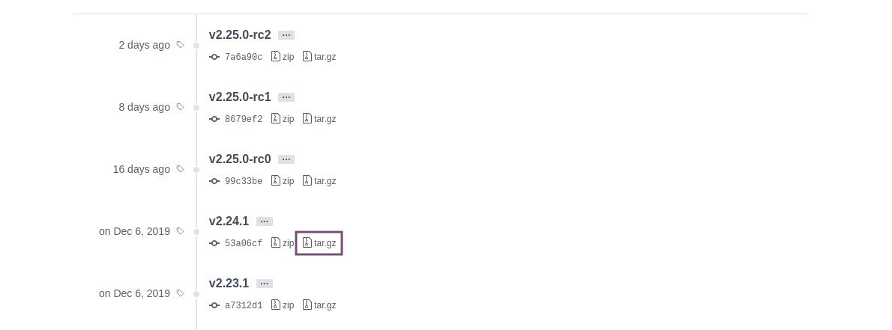

在 Raspberry Pi 上安装 git
Git 是一种分布式版本控制系统，当今大多数软件团队都在使用它。它使您可以跟踪代码更改，恢复到上一阶段，创建分支以及与其他开发人员进行协作。
Git 最初是由 Linux 内核的创建者 Linus Torvalds 开发的。
本教程介绍了如何在 Raspberry Pi 上安装 Git 。我们假设您在 Raspberry Pi 上安装了 Raspbian 。
对于大多数人来说，安装 Git 的最简单和推荐的方法是使用 apt 软件包管理工具进行安装。
使用 Apt 安装 Git
Git 软件包包含在 Raspbian 的默认存储库中。
以 root 或具有 sudo 特权的用户身份运行以下命令，以在 Raspberry Pi 上安装 Git ：
sudo apt update
输入以下命令以验证安装：
git --version
在撰写本文时， Raspberry Pi 存储库中提供的 Git 的当前版本为 2.20.1 。
git version 2.20.1
现在，您已经安装了 Git ，就可以开始使用它了。
从源代码安装 Git
从源代码编译 Git 允许您安装最新的 Git 版本并自定义构建选项。但是，您将无法通过 apt 软件包管理器来维护 Git 安装。
首先安装在 Raspbian 上构建 Git 所需的依赖项：
sudo apt update
安装完成后，打开浏览器，访问 GitHub 上 Git 项目的镜像，并复制以 .tar.gz 结尾的最新发行链接 URL：

当前，最新的稳定版 Git 是 2.24.1 ，但可能与您有所不同。
我们将在 /usr/src 目录中下载 Git 源，该目录是放置源文件的常用位置。导航到目录：
cd /usr/src/
使用先前复制的链接下载 tar.gz 文件为 git.tar.gz ：
sudo wget https://github.com/git/git/archive/v2.24.1.tar.gz -O git.tar.gz
接下来，解压缩 并通过键入以下命令转到 git source 目录：
sudo tar -xf git.tar.gz
运行以下两个命令来编译和安装 Git ：
sudo make prefix=/usr/local all
键入 git --version 以验证安装：
git --version
git version 2.24.1
稍后，当发布新版本时，要更新 Git ，请下载档案并重复构建过程。
配置 Git
现在您已经在 Raspberry Pi 机器上安装了 Git ，设置个人信息是一个好主意。以下命令将设置您的提交名称和电子邮件地址：
git config --global user.name "Your Name"
要确认您已在 Git 中正确设置了信息，请输入：
git config --list
user.name=Your Name
user.email=youremail@yourdomain.com
配置设置存储在 ~/.gitconfig 文件中：
[user]
name = Your Name
email = youremail@yourdomain.com
如果要对全局 Git 配置进行其他更改，请使用 git config 命令或 ~/.gitconfig 手动编辑文件。
结论
在 Raspberry Pi 上安装 Git 只需运行一个 apt 命令即可。如果要使用最新的 Git 版本，则需要从源代码进行构建。
使用 Raspberry Pi ，您可以在本地网络上设置自己的 Git 服务器。
如果您不熟悉 Git ，请查看 Pro Git 书籍，这是学习如何使用 Git 的绝佳资源。